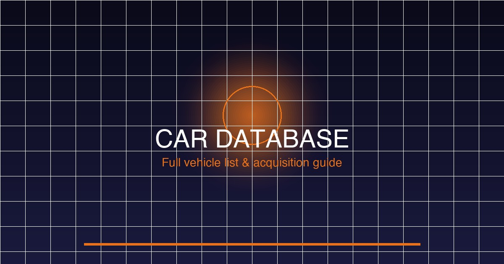

Photo Mode in FH6 is one of the most powerful and versatile in any racing game. Access it by pressing View/Gallery button while your car is stationary or in free roam. Every setting affects the final image — understand each to capture professional-quality screenshots.
| Control | Function | Advanced Tip |
|---|---|---|
| Left Stick | Pan camera left/right/up/down | Use for large movements and positioning |
| Right Stick | Rotate camera around car | Rotate freely — no gimbal limits in Photo Mode |
| LT/RT | Zoom in/out | Use for dramatic wide shots or detail close-ups |
| LB/RB | Camera roll (tilt) | Add dramatic Dutch angle shots |
| A/X | Focus on car | Quick snap focus to vehicle center |
| X/Square | Toggle depth of field | Enable/disable background blur |
| Y/Triangle | Reset camera | Return to default position |
| B/Circle | Exit Photo Mode | Or press View/Gallery again |
| Filter Name | Style | Best For |
|---|---|---|
| Cinema Classic | Orange-teal, high contrast, film grain | Drift shots, dramatic racing |
| Vintage Japan | Muted warm tones, slight haze | Street racing, touge scenes |
| Sunset Drift | Warm golden, soft highlights | Golden hour shots |
| Neon Night | Vibrant blues and magentas | Tokyo neon streets |
| Snow White | Cool blue-white, high clarity | Winter Hokkaido shots |
| Pro Film | Neutral, rich color, natural | All-round utility, car detail shots |
| B&W Classic | High contrast black and white | Artistic shots, strong emotion |
| Cross Process | Bold color shift, retro look | Creative/artistic shots |
| HDR Sharp | Maximum detail, lifted shadows | Car detail, liveries, paint |
| Soft Portrait | Warm skin tones, soft blur | Driver shots, lifestyle |
Event Lab allows you to create completely custom racing events using the FH6 road network. Design your own circuits, drift zones, and challenges, then share them with the community and subscribe to community creations.
| Event Type | Description | Best Use |
|---|---|---|
| Circuit Race | Lap-based racing on closed loop | Technical tracks, circuit championships |
| Sprint Race | Point-to-point race | Road stages, touge events |
| Drift Zone Attack | Score-based drift challenge on zone | Drift skills, scoring events |
| Speed Zone Challenge | Average speed through zone | High-speed passes, skill chains |
| Trailblazer | Time attack through checkpoints | Open-world exploration races |
| Cross Country | Off-road terrain event | Rally, dirt, snow events |
| Lab Playground | No rules, open sandbox | Stunts, photo spots, creative freedom |
Blueprint Creator is a simplified version of Event Lab focused specifically on circuit design. It provides an intuitive grid-based interface for creating precise circuits without needing to drive the route first.
| Tool | Function | Keyboard Shortcut |
|---|---|---|
| Straight Segment | Add straight road pieces | 1 |
| Curve Left | Add left-turn piece | 2 |
| Curve Right | Add right-turn piece | 3 |
| Hairpin | Add tight 180° turn piece | 4 |
| Chicane | Add S-curve section piece | 5 |
| Jump Ramp | Add aerial section with ramp | 6 |
| Start/Finish Line | Define race start and end | 7 |
| Checkpoint | Place timing checkpoint | 8 |
| Erase | Remove piece | 9 |
| Undo | Undo last action | Ctrl+Z |
The Festival Site is your main hub in FH6. You can customize and upgrade festival sites to unlock more features, storage, and visual flair. Each region has at least one main festival site plus smaller outposts.
| Building | Function | Upgrade Effect |
|---|---|---|
| Autoshow | Buy any vehicle from full catalog | Expands brand selection; unlocks exclusive manufacturers |
| Garage | Store and customize vehicles | Additional car slots: 10 → 25 → 50 → 100 |
| Festival Site Tent | Main story progression hub | Unlocks new story chapters and event types |
| Gas Station | Buy performance parts and tuning | Adds higher-tier parts; unlocks advanced tuning |
| Clothing Shop | Buy driver gear and accessories | Adds seasonal clothing lines and limited items |
| House | Safe house and fast travel point | Unlocks fast travel origin; storage expansion |
| Photo Studio | Advanced Photo Mode with studio lighting | New lighting presets and backdrop options |
| Arcade | Mini-games and challenges | Unlocks mini-game types and reward items |
Skill points in FH6 are earned through driving actions and must be allocated to the right skills for your play style. The Skill Planner helps you plan which skills to prioritize for maximum efficiency.
| Skill Type | How to Earn | Best Activities | Priority |
|---|---|---|---|
| Speed | Fast driving, speed board smashing | Highway loops, danger signs | ⭐⭐⭐⭐⭐ |
| Style | Drifting, controlled slides | Touge, barrier circuits | ⭐⭐⭐⭐⭐ |
| Exploration | Discover new locations | Uncharted roads, new regions | ⭐⭐⭐⭐ |
| Danger | Near-miss at high speed | City driving with traffic | ⭐⭐⭐ |
| Clean Racing | Win without collisions | Time trials, circuits | ⭐⭐⭐ |
| Skill Type | Allocation | Why |
|---|---|---|
| Speed | 40% | City races have many speed boards and highway sections |
| Style | 25% | Drift events in city and touge areas |
| Exploration | 15% | Discover new routes and shortcuts |
| Danger | 15% | Near-miss in dense traffic |
| Clean Racing | 5% | Not a priority in street races |
| Skill Type | Allocation | Why |
|---|---|---|
| Speed | 35% | Downhill speed and speed boards on passes |
| Style | 40% | Drift is the core scoring mechanic for touge |
| Exploration | 15% | Mountain road discovery and hidden shortcuts |
| Danger | 10% | Touge runs rarely have close traffic |
| Clean Racing | 0% | Not relevant in touge |
| Skill Type | Allocation | Why |
|---|---|---|
| Speed | 20% | Off-road is about control, not top speed |
| Style | 20% | Off-road drift is technical but scores well |
| Exploration | 20% | Cross-country routes require route finding |
| Danger | 15% | Rocky terrain and jump landings are risky |
| Clean Racing | 25% | Rally championships reward clean driving |
